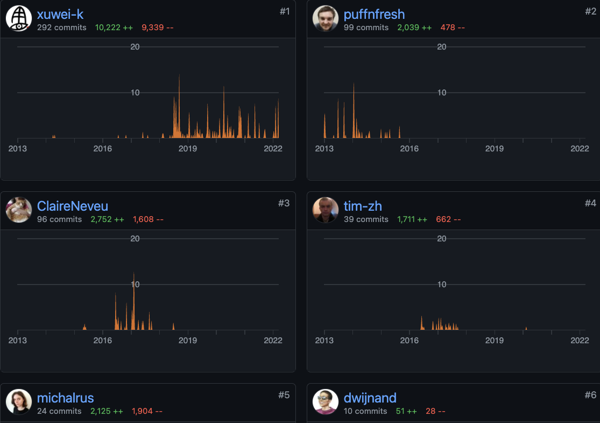
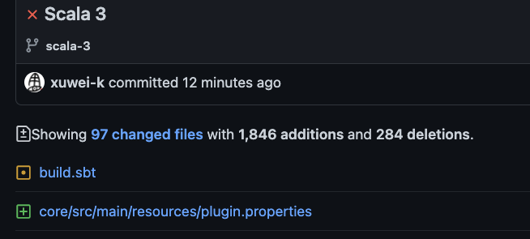

<DOCTYPE html>
<html>
  <head>
    <title>WartremoverのScala 3対応</title>
    <meta http-equiv="Content-Type" content="text/html; charset=UTF-8"/>
<script async src="https://platform.twitter.com/widgets.js" charset="utf-8"></script>
    <style type="text/css">
      @import url(https://fonts.googleapis.com/css?family=Droid+Serif:400,700,400italic);
      @import url(https://fonts.googleapis.com/css?family=Ubuntu+Mono:400,700,400italic);

      body {
        font-family: Consolas, 'Liberation Mono', Menlo, Courier, monospace;
      }
      ul li ul li {
        font-size: 75%;
      }
      p {
        font-size: 150%;
      }
      li {
        font-size: 30px;
      }
      .remark-slide-content h1 {
        font-size: 70px;
      }
      .remark-slide-content h2 {
        font-size: 50px;
      }
      h1, h2, h3, h4 {
        font-family: Consolas, 'Liberation Mono', Menlo, Courier, monospace;
        font-weight: normal;
        text-align: center;
      }
      img {
        max-width : 100%;
        max-height : 70%;
        display: block;
        margin-left: auto;
        margin-right: auto;
        border: 1px gray solid;
      }
      .s {
        font-size: 85%;
      }
      .remark-code, .remark-inline-code {
        font-size: 20px;
        font-family: Consolas, 'Liberation Mono', Menlo, Courier, monospace;
      }
      /* Two-column layout */
      .left-column {
        width: 50%;
        float: left;
      }
      .right-column {
        width: 45%;
        float: right;
      }
    </style>
  </head>
  <body>
    <textarea id="source">

class: center, middle

# Wartremoverの<br/>Scala 3対応

[ScalaMatsuri 2022](https://scalamatsuri.org)


---
class: middle


- twitter [@xuwei_k](https://twitter.com/xuwei_k)
- github [@xuwei-k](https://github.com/xuwei-k)
- blog <https://xuwei-k.hatenablog.com>

---
class: middle, center

近況

## [Scala 3移行の発表](https://xuwei-k.hatenablog.com/entry/2022/03/05/100217)

---
class: middle

## What is Wartremover?

- Compiler Plugin
- Linter
- 独自のruleを書いて拡張可能

---
class: middle

## Wartremover History

- 2013
  - [initial commit](https://github.com/wartremover/wartremover/commit/a0bf88cbec9726800fc) by [@puffnfresh](https://github.com/puffnfresh)
- 2016 to 2018 ?
  - second maintainer [@ClaireNeveu](https://github.com/ClaireNeveu)
- 2019 ~
  - [@xuwei-k](https://github.com/xuwei-k)

---
class: middle

### [Wartremover Contributors](https://github.com/wartremover/wartremover/graphs/contributors)



---
class: middle, center

大前提

## compiler pluginは何よりも<br/>強力な代わりに諸刃の剣なので<br/>本当に必要な時以外<br/>作るべきではない！

---
class: middle

## Compiler Pluginが強力?

- macroより強力
- 微妙なところではあるが、用途によってコード生成で済むならその方がマシな場合も

---
class: middle

## Wartremover<br/><br/>or<br/><br/>Scalafix?

---
class: middle

## Scalafix

- 新しい
- 書き換えまで出来て高機能、便利
- ASTが綺麗？(要出典
- ある意味、既にScala 3対応済
  - scalafixそのものはScala 2で書かれてるが、<br>Scala 3 codeに対し適用可

---
class: middle, center

## [Scalafix公式にwartremover含めた関連ツールとの比較ページがあるよ](https://scalacenter.github.io/scalafix/docs/users/related-projects.html)

---
class: middle

なぜScalafixがあるのにWartremoverを頑張るのか？

## ScalafixのSemanticRule<br/>が重たい！！！

---
class: middle

## Scalafixは2種類

- SyntacticRule
  -  型情報扱えない。あくまでparseした結果のみ
- SemanticRule
  - Syntacticと比較したら追加で型情報のようなものが扱える?
  - 完全な型ではないらしい?(よくわかってない)
  - 重い、実行に時間がかかるので、個人的にあまり書いてない

---
class: middle

## SemanticRule

型情報扱うためにsemanticdbというものをcompile時に出すが、それが遅い？重たい？

---
class: middle, center

compiler pluginの方が原理上かるくなるはず？

↓

ではwartremoverのScala 3対応<br/>も頑張ってみるか？

---
class: middle, center

## Wartremover Scala 3<br>対応の障壁

Compiler依存なので全部書き直し？？？

test codeも？？？

---
class: middle, center

## test codeだけでもScala 2<br/>と共通化する仕組み作りたい！

---
class: middle, center

<blockquote class="twitter-tweet"><p lang="ja" dir="ltr">Scala 3のcompiler plugin、同じsbt project内部で開発と実行しようとしても、単純にやるとClassLoaderがキャッシュしてしまって、pluginのソースいじっても反映されなくて、sbt丸ごと立ち上げ直さないといけない・・・？<a href="https://t.co/5Md7rnUReX">https://t.co/5Md7rnUReX</a></p>&mdash; Kenji Yoshida (@xuwei_k) <a href="https://twitter.com/xuwei_k/status/1486975966073483265?ref_src=twsrc%5Etfw">January 28, 2022</a></blockquote> <script async src="https://platform.twitter.com/widgets.js" charset="utf-8"></script>

---
class: middle

## そもそもcompiler plugin<br/>のtestどう書く？

---
class: middle

## compiler pluginのtest

- sbtのscripted test?
- "compile時に警告が出る" ことのtestとは？

---
class: middle

### [Wartremover 2におけるtest](https://github.com/wartremover/wartremover/blob/d3be1992dabab95a4c6e9fe5ce897b0f02feb89d/core/src/test/scala/org/wartremover/test/SizeIsTest.scala)

```scala
val result = WartTestTraverser(SizeIs) {
  List(3).size == 1
  Vector(3).size <= 1
  Iterable(3).size >= 1
  Map.empty[Int, String].size > 1
  Set.empty[Boolean].size < 1
}
assertErrors(result)(
  "Maybe you can use `sizeIs` instead of `size`",
  5
)
```

<span style="font-size: 70%">collectionのsizeだったらsizeIsに置き換え可能<br/>なことを教えてくれるルールのtest</span>

---
class: middle

```scala
val result = WartTestTraverser(SizeIs) {
  Array(2).size == 1
  Array(true).length <= 3
  "foo".size == 2
  "foo".length == 3
  (null: java.util.List[String]).size > 4
}
assertEmpty(result)
```

<span style="font-size: 70%">ArrayやStringは警告出さないか？</span>

---
class: middle, center

### Wartremover 2におけるtest

## [単純なcompiler plugin<br/>とは別の専用macroがある！](https://github.com/wartremover/wartremover/blob/d3be1992dabab95a4c6e9fe5ce897b0f02feb89d/core/src/main/scala-2/org/wartremover/test/WartTestTraverser.scala)

---
class: middle

<embed src="graph.svg" type="image/svg+xml" />

---
class: middle

#### Wartremover 2におけるtest

- compiler pluginとは別のmacro？？？
- もちろん普通のmacroではなくcompilerのAPIも触る若干の黒魔術なmacro

---
class: middle

Wartremover 2におけるtest用macro

- macro input
  - source code
- [macro output](https://github.com/wartremover/wartremover/blob/d3be1992dabab95a4c6e9fe5ce897b0f02feb89d/core/src/main/scala-2/org/wartremover/test/WartTestTraverser.scala#L10)
  - <span style="font-size:130%">warnings: List[String]</span>
  - <span style="font-size:130%">errors: List[String]</span>

---
class: middle, center

Scala 3におけるtest用macroの作り方講座・・・?

の前にScala 2のwartremoverの<br>アーキテクチャと関連用語解説

---
class: middle

#### Scala 2 wartremover関連用語集

- [WartUniverse](https://github.com/wartremover/wartremover/blob/d3be1992dabab95a4c6e9fe5ce897b0f02feb89d/core/src/main/scala-2/org/wartremover/WartTraverser.scala#L151)
  - Scala 2のUniverseのwapperかつその他errorとwarningメソッド定義など
- [WartTraverser](https://github.com/wartremover/wartremover/blob/d3be1992dabab95a4c6e9fe5ce897b0f02feb89d/core/src/main/scala-2/org/wartremover/WartTraverser.scala#L8)
  - 個々のruleを定義する時に継承するtrait
  - WartUniverseを受け取って、Traverserを返す
- [Traverser](https://github.com/scala/scala/blob/v2.13.8/src/reflect/scala/reflect/api/Trees.scala#L2487)
  - scala-reflect 2内部のclass
- [Global](https://github.com/scala/scala/blob/v2.13.8/src/compiler/scala/tools/nsc/Global.scala#L45)
  - compile時に必要な情報を全て持っていて引回すScala 2 compiler内部のclass

---
class: middle, center

## Universe?宇宙?🤔


---
class: middle

[Scala 2 wartremover定義例](https://github.com/wartremover/wartremover/blob/d3be1992dabab95a4c6e9fe5ce897b0f02feb89d/core/src/main/scala-2/org/wartremover/warts/SizeIs.scala)

```scala
object SizeIs extends WartTraverser {
  override def apply(u: WartUniverse): u.Traverser = {
    import u.universe._
    new Traverser {
      override def traverse(tree: Tree): Unit = {
        tree match {
          case t if hasWartAnnotation(u)(t) =>
          case Apply(
                Select(
                  Select(
                    IsScalaCollection(),
                    a @ (TermName("size") | TermName("length"))
                  ),
                  Method()
                ),
                List(_)
              ) if !isSynthetic(u)(tree) =>
            error(u)(
              tree.pos,
              s"Maybe you can use `${a.decodedName}Is` instead of `${a.decodedName}`"
            )
```

---
class: middle

#### Scala 3 wartremover用語集

- WartUniverseとWartTraverser
  - 同じようなもの作る予定？
- Traverser
  - [scala3-libraryのもの](https://github.com/lampepfl/dotty/blob/55877679f120b39740fbb87d345c0b1356f07a5d/library/src/scala/quoted/Quotes.scala#L4482)を使う？(後述)
- Scala 2 compilerのGlobal
  - Scala 3では[Context](https://github.com/lampepfl/dotty/blob/55877679f120b39740fbb87d345c0b1356f07a5d/compiler/src/dotty/tools/dotc/core/Contexts.scala#L126)というものになってる
- Quotes
  - [Scala 3でmacro書く時に必ず渡ってくる、必要になる何か](https://github.com/lampepfl/dotty/blob/55877679f120b39740fbb87d345c0b1356f07a5d/library/src/scala/quoted/Quotes.scala)

---
class: middle

### Scala 3におけるtest用macroの作り方講座

- 1: Scala 2と同じようなシグネチャのmacroを定義
- 2: 渡ってきたQuotesを[`scala.quoted.runtime.impl.QuotesImpl`](https://github.com/lampepfl/dotty/blob/55877679f120b39740fbb87d345c0b1356f07a5d/compiler/src/scala/quoted/runtime/impl/QuotesImpl.scala)に無理矢理asInstanceOf
- 3: QuotesImplはContextを内包しているので、それを取り出して独自[Reporter](https://github.com/lampepfl/dotty/blob/55877679f120b39740fbb87d345c0b1356f07a5d/compiler/src/dotty/tools/dotc/reporting/Reporter.scala#L64)をset

---
class: middle

### Scala 3におけるtest用macroの作り方講座

- 4: 細かい処理中略
- 5: 検査対象のExprを引数で受け取ったTraverserでtraverse
- 6: 設定した独自Reporterからwarningsとerrors取り出してmacroの戻り値として返す

---
class: middle

Scala 3におけるtest用macro

```scala
inline def apply[A <: WartTraverser](inline t: A)(inline a: Any): Result = ${ applyImpl[A]('t, 'a) }

def applyImpl[A <: WartTraverser: Type](
  t: Expr[A], expr: Expr[Any]
)(using q1: Quotes): Expr[Result] = {
  val q2 = q1.asInstanceOf[QuotesImpl]
  val reporter = new WartReporter
  q2.ctx.asInstanceOf[FreshContext].setReporter(reporter)
  val wart = {
    val clazz = Class.forName(t.show + NameTransformer.MODULE_SUFFIX_STRING)
    clazz.getField(NameTransformer.MODULE_INSTANCE_NAME).get(null).asInstanceOf[WartTraverser]
  }
  val universe = new WartUniverse(q1, wart, false, LogLevel.Info)
  val x: universe.Traverser = wart.apply(universe)
  val term = x.q.reflect.asTerm(expr)
  x.traverseTree(term)(term.symbol)
  val result1 = reporter.result
  val warnings = result1.collect { case a if a.level() == DiagnosticInterface.WARNING => a.message() }
  val errors = result1.collect { case a if a.level() == DiagnosticInterface.ERROR => a.message() }
  Expr(Result(errors = errors, warnings = warnings))
}
```

---
class: middle

## compiler pluginの辛さ

- scalafixと比較してTreeが綺麗ではない？
  - Scala 3の方が多少まし？だが圧倒的にscalafix使いやすい
  - 慣れの問題？個人の感想？
- compiler内部に依存してしまうとcompilerが互換壊すと辛い
  - libraryと違い互換はあまり保証されない

---
class: middle

## compiler pluginの辛さ

- typer phase後だと自動生成部分まで渡ってくる
  - case classのcopy
  - PartialFunction(applyOrElseやisDefinedAtに展開)
  - xml literalが展開後(後述)
  - その他色々。Scala 2も3も同様
- typerの前のparser phase後で受け取れるのか謎
  - やってみたけどよくわからない
- macroから展開されたcodeか？なども考慮する必要あり


---
class: middle

```scala
val x: PartialFunction[Int, Int] = {
  case x if x % 2 == 0 => x.toString
}
```

```bash
scala -Xprint:typer -e "ここにコード"
```

---
class: middle

```scala
val x: PartialFunction[Int,Int] = ({
  @SerialVersionUID(value = 0) final <synthetic> class $anonfun extends scala.runtime.AbstractPartialFunction[Int,Int] with java.io.Serializable {
    def <init>(): <$anon: Int => Int> = {
      $anonfun.super.<init>();
      ()
    };
    final override def applyOrElse[A1 <: Int, B1 >: Int](x1: A1, default: A1 => B1): B1 = ((x1.asInstanceOf[Int]: Int): Int @unchecked) match {
      case (x @ _) if x.%(2).==(0) => x.toString()
      case (defaultCase$ @ _) => default.apply(x1)
    };
    final def isDefinedAt(x1: Int): Boolean = ((x1.asInstanceOf[Int]: Int): Int @unchecked) match {
      case (x @ _) if x.%(2).==(0) => true
      case (defaultCase$ @ _) => false
    }
  };
  new $anonfun()
}: PartialFunction[Int,Int]);
```

---
class: middle

```
$ scala -Xprint:typer -e "case class A(x: Int)"
```

<pre><code class="scala hljs remark-code" style="font-size: 40%;">
case class A extends AnyRef with Product with Serializable {
  <caseaccessor> <paramaccessor> private[this] val x: Int = _;
  <stable> <caseaccessor> <accessor> <paramaccessor> def x: Int = A.this.x;
  def <init>(x: Int): this.A = {
    A.super.<init>();
    ()
  };
  <synthetic> def copy(x: Int = x): this.A = new A(x);
  <synthetic> def copy$default$1: Int = A.this.x;
  override <synthetic> def productPrefix: String = "A";
  <synthetic> def productArity: Int = 1;
  <synthetic> def productElement(x$1: Int): Any = x$1 match {
    case 0 => A.this.x
    case _ => scala.runtime.Statics.ioobe[Any](x$1)
  };
  override <synthetic> def productIterator: Iterator[Any] = scala.runtime.ScalaRunTime.typedProductIterator[Any](A.this);
  <synthetic> def canEqual(x$1: Any): Boolean = x$1.$isInstanceOf[this.A]();
  override <synthetic> def productElementName(x$1: Int): String = x$1 match {
    case 0 => "x"
    case _ => scala.runtime.Statics.ioobe[String](x$1)
  };
  override <synthetic> def hashCode(): Int = {
    <synthetic> var acc: Int = -889275714;
    acc = scala.runtime.Statics.mix(acc, A.this.productPrefix.hashCode());
    acc = scala.runtime.Statics.mix(acc, x);
    scala.runtime.Statics.finalizeHash(acc, 1)
  };
  override <synthetic> def toString(): String = scala.runtime.ScalaRunTime._toString(A.this);
  override <synthetic> def equals(x$1: Any): Boolean = A.this.eq(x$1.asInstanceOf[Object]).||(x$1 match {
     case (_: this.A) => true
     case _ => false
   }.&&({
    <synthetic> val A$1: this.A = x$1.asInstanceOf[this.A];
    A.this.x.==(A$1.x).&&(A$1.canEqual(A.this))
  }))
};

<synthetic> private object A extends scala.runtime.AbstractFunction1[Int,this.A] with java.io.Serializable {
  def <init>(): this.A.type = {
    A.super.<init>();
    ()
  };
  final override <synthetic> def toString(): String = "A";
  case <synthetic> def apply(x: Int): this.A = new A(x);
  case <synthetic> def unapply(x$0: this.A): Option[Int] = if (x$0.eq(null))
    scala.None
  else
    Some.apply[Int](x$0.x)
}
</code></pre>

---
class: middle

### Scala 3.1.1 [compiler phases](https://github.com/lampepfl/dotty/blob/3.1.1/compiler/src/dotty/tools/dotc/Compiler.scala#L19-L144)

<pre><code class="bash hljs remark-code" style="font-size: 50%;">
$ scala -Xshow-phases
parser
typer
inlinedPositions
sbt-deps
extractSemanticDB
posttyper
prepjsinterop
sbt-api
SetRootTree
pickler
inlining
postInlining
staging
pickleQuotes
{firstTransform, checkReentrant, elimPackagePrefixes, cookComments, checkStatic, checkLoopingImplicits, betaReduce, inlineVals, expandSAMs}
initChecker
{elimRepeated, protectedAccessors, extmethods, uncacheGivenAliases, byNameClosures, hoistSuperArgs, specializeApplyMethods, refchecks, tryCatchPatterns, patternMatcher}
{elimOpaque, explicitJSClasses, explicitOuter, explicitSelf, elimByName, stringInterpolatorOpt}
{pruneErasedDefs, uninitializedDefs, inlinePatterns, vcInlineMethods, seqLiterals, intercepted, getters, specializeFunctions, liftTry, collectNullableFields, elimOuterSelect, resolveSuper, functionXXLForwarders, paramForwarding, genericTuples, letOverApply, arrayConstructors}
erasure
{elimErasedValueType, pureStats, vcElideAllocations, arrayApply, addLocalJSFakeNews, elimPolyFunction, tailrec, completeJavaEnums, mixin, lazyVals, memoize, nonLocalReturns, capturedVars}
{constructors, instrumentation}
{lambdaLift, elimStaticThis, countOuterAccesses}
{dropOuterAccessors, checkNoSuperThis, flatten, transformWildcards, moveStatic, expandPrivate, restoreScopes, selectStatic, junitBootstrappers, Collect entry points, collectSuperCalls, repeatableAnnotations}
genSJSIR
genBCode
</code></pre>

---
class: middle

### Scala 2.13.8 [compiler phases](https://github.com/scala/scala/blob/v2.13.8/src/compiler/scala/tools/nsc/Global.scala#L679-L701)

<pre><code class="bash hljs remark-code" style="font-size: 50%;">
$ scala -Xshow-phases
    phase name  id  description
    ----------  --  -----------
        parser   1  parse source into ASTs, perform simple desugaring
         namer   2  resolve names, attach symbols to named trees
packageobjects   3  load package objects
         typer   4  the meat and potatoes: type the trees
superaccessors   5  add super accessors in traits and nested classes
    extmethods   6  add extension methods for inline classes
       pickler   7  serialize symbol tables
     refchecks   8  reference/override checking, translate nested objects
        patmat   9  translate match expressions
       uncurry  10  uncurry, translate function values to anonymous classes
        fields  11  synthesize accessors and fields, add bitmaps for lazy vals
     tailcalls  12  replace tail calls by jumps
    specialize  13  @specialized-driven class and method specialization
 explicitouter  14  this refs to outer pointers
       erasure  15  erase types, add interfaces for traits
   posterasure  16  clean up erased inline classes
    lambdalift  17  move nested functions to top level
  constructors  18  move field definitions into constructors
       flatten  19  eliminate inner classes
         mixin  20  mixin composition
       cleanup  21  platform-specific cleanups, generate reflective calls
    delambdafy  22  remove lambdas
           jvm  23  generate JVM bytecode
      terminal  24  the last phase during a compilation run
</code></pre>

---
class: middle

### What is Typer?

以下はScala 2と3でおそらく大体同じ?

- 型付け含め色々やるらしい
  - 詳細知らない
- implicit探索などもおそらくここだし、大抵ここが遅い?
- 大抵のcompiler plugin書く場合はこの後？

---
class: middle

## compiler pluginの辛さ

- 他のcompiler plugin(例: scoverage)と組み合わせるとあり得ないTree渡ってくるので特殊処理必要
- compiler内部はmutable(Scala 2も3も)
- errorが出た場合の原因が慣れないとわかりにくい？

---
class: middle

```bash
$ scala -version 
Scala code runner version 2.12.15 -- Copyright 2002-2021, LAMP/EPFL and Lightbend, Inc.
$ scala -Xprint:typer -e "<a />"
```

```scala
new scala.xml.Elem(
  null,
  "a",
  scala.xml.Null,
  scala.xml.TopScope,
  true
)
```

---
class: middle

- scala-xmlの対策しないと!
- 安易にscala-xmlのclass直接触るコードを書く
- scala-xmlは標準ライブラリではないので、scala-xmlの依存がないとcompilerが死ぬコードになってしまう！

---
class: middle

## compiler pluginの良いところ

- compiler内部の完全な型にアクセス可能
- compile途中のphaseに挟み込めば原理上一番無駄がない
  - 中間データ的なものが一番少なくて済むはず？
- Scala 3だとExprを直接pattern match出来て便利！
  - ただし割とまだbugもある

---
class: middle

Exprのmatch楽しい！便利！最高！


```scala
t.asExpr match {
  case '{ ($x1: Iterable[t]).size < ($x2: Int) } =>
    error(u)(tree.pos, sizeMessage)
  case '{ ($x1: Iterable[t]).size == ($x2: Int) } =>
    error(u)(tree.pos, sizeMessage)
  case '{ ($x1: Iterable[t]).size <= ($x2: Int) } =>
    error(u)(tree.pos, sizeMessage)
```

ただし、あくまでExprだけであって、<br/>全てがこれで書けるわけではない

---
class: middle

```scala
t.asExpr match {
  case '{ ($x: List[t]).toList } =>
    error(u)(tree.pos, "redundant toList conversion")
  case '{ ($x: Vector[t]).toVector } =>
    error(u)(tree.pos, "redundant toVector conversion")
  case '{ ($x: Set[t]).toSet } => // ここでなぜか死ぬ？？？
    error(u)(tree.pos, "redundant toSet conversion")
```

---
class: middle

報告したbugその1

<https://github.com/lampepfl/dotty/issues/14708>

---
class: middle

正解はこちら

[Exprのpattern match内部で型自体を変数として扱う場合の書き方](https://github.com/scala/docs.scala-lang/blob/4a79b3f6233060eba7b151e596c3ec601bfcb1d4/_overviews/scala3-macros/tutorial/quotes.md?plain=1#L322-L343)

```scala
case '{
      type t1
      type t2 >: `t1`
      ($x: Set[`t1`]).toSet[`t2`]
    } =>
  error(u)(tree.pos, "redundant toSet conversion")
```

---
class: middle

両方の変数を参照出来るけど何これ？ 🤔

```scala
import scala.quoted.*

object Macros {
  def fooImpl(a: Expr[Any])(using Quotes): Expr[Any] = a match {
    case '{ $x1: String } | '{ $x2: Int } =>
      println((x1, x2))
      a
  }

  inline def foo(a: Any) = ${fooImpl('a)}
}
```

---
class: middle

報告したbugその2

<https://github.com/lampepfl/dotty/issues/14696>

```java
java.lang.VerifyError: Bad local variable type
Exception Details:
  Location:
    example/Macros$.fooImpl(Lscala/quoted/Expr;Lscala/quoted/Quotes;)Lscala/quoted/Expr; @179: aload
  Reason:
    Type top (current frame, locals[8]) is not assignable to reference type
  Current Frame:
    bci: @179
    flags: { }
    locals: { 'example/Macros$', 'scala/quoted/Expr', 'scala/quoted/Quotes', 'scala/quoted/Expr', 'scala/Option' }
    stack: { 'scala/Predef$', 'scala/Tuple2$' }
```

---
class: middle

### Wartremoverのcompiler plugin側実装予定コード

<pre><code class="scala hljs remark-code" style="font-size: 80%;">
import dotty.tools.dotc.plugins.PluginPhase
import dotty.tools.dotc.plugins.StandardPlugin

class WartremoverPlugin extends StandardPlugin {
  override def name = "wartremover"

  override def description = "wartremover"

  override def init(options: List[String]): List[PluginPhase] = {
    // ここで引数parseする

    val newPhase = new WartremoverPhase(
      // parseした引数から生成したもの渡す
    )
    newPhase :: Nil
  }
</code></pre>

---
class: middle

### Wartremoverのcompilerのphase実装予定コード

<pre><code class="scala hljs remark-code" style="font-size: 50%;">
class WartremoverPhase(
  errorWarts: List[WartTraverser], warningWarts: List[WartTraverser]
  // その他の引数省略
) extends PluginPhase {
  override def phaseName = "wartremover"
  // Typerの後に実行して！という指定
  override val runsAfter = Set(TyperPhase.name)

  // 他にも色々あるが、おそらくこれだけで原理上全部のTree辿れる？
  override def prepareForUnit(tree: Tree)(using c: Context) = {
    // Contextと新しいQuotesを生成
    val c2 = QuotesCache.init(c.fresh)
    val q = scala.quoted.runtime.impl.QuotesImpl()(using c2)
    def runWart(w: WartTraverser, onlyWarning: Boolean): Unit = {
      val universe = new WartUniverse(
        quotes = q,
        traverser = w,
        onlyWarning = onlyWarning,
        // その他引数
      )
      val traverser = w.apply(universe)
      // compiler内部のTreeをlibrary側のTreeに無理矢理キャスト！
      val t = tree.asInstanceOf[traverser.q.reflect.Tree]
      try {
        traverser.traverseTree(t)(t.symbol)
      } catch {
        case NonFatal(e) =>
          // 場合によってログ出す
      }
    }
    errorWarts.foreach(w => runWart(w = w, onlyWarning = false))
    warningWarts.foreach(w => runWart(w = w, onlyWarning = true))
    c
  }
</code></pre>

---
class: middle

### アーキテクチャの悩み

個々のwart?rule?を書く側にはscala3-library側のAPI使わせる

or

compilerのASTそのまま触ってもらう？

---
class: middle

## [scala-reflect 2のASTが抽象化されてない例](https://github.com/scala/scala/blob/c16096df2ab9c666f802762277950ed8734141eb/src/reflect/scala/reflect/api/Trees.scala#L680)

A labelled expression.  Not expressible in language syntax, but
generated by the compiler to simulate while/do-while loops, and
also by the pattern matcher.

---
class: middle

## [scala-reflect 2のASTが抽象化されてない例](https://github.com/scala/scala/blob/c16096df2ab9c666f802762277950ed8734141eb/src/reflect/scala/reflect/api/Trees.scala#L696)

```scala
type LabelDef >: Null <: LabelDefApi
  with DefTree with TermTree
```

- Scala 3のQuotes APIには出てこない？
- 隠されてるのか、根本的になくなったのかよくわかってない

---
class: middle

### scala3-library側のAPI使わせる案

- 現状は、この方針の予定
- compiler pluginで受け取ったASTを無理矢理キャストすると、ほぼ動く
- [いくつかのTreeの種類でここでMatchError](https://github.com/lampepfl/dotty/blob/55877679f120b39740fbb87d345c0b1356f07a5d/library/src/scala/quoted/Quotes.scala#L4384-L4467)

---
class: middle

## [Scala 3対応の進捗](https://github.com/xuwei-k/wartremover/commit/d7e3b2c795cb0ed252cfc981d8107ddd2a46ad0c)



---
class: middle

### [Scala 3対応の進捗](https://github.com/xuwei-k/wartremover/commit/d7e3b2c795cb0ed252cfc981d8107ddd2a46ad0c)

- 6〜7割のテストがそのまま通った？
- 残りが色々辛い
- そもそもScala 3で原理的に解決されてるもの
  - ProductやSerializableに推論されなくなった
  - implicitに型書くのが必須化
  - implicit conversion禁止
  - 必ずfalseになる比較がcompile error
- 近日中に3.0.0-RC1出す・・・？

---
class: middle

### Scala 3におけるwartremover

- そもそもscalafixのSyntacticRule使えば必要ないもの色々
- 明らかに型情報必要なくparseだけすればすぐわかるパターン
  - throw, null, return, while, var, asInstanceOf, isInstanceOfの禁止

---
class: middle

(少し頑張れば)こういうのもscalafixのSyntacticRuleで?

- default arguments禁止
- implicit conversion禁止
- type classではない(型引数持たない)context引回し用implicit param禁止
- sealed継承したら必ずfinalにしないとダメだぞ！

---
class: middle

### Scala 3におけるwartremover

しかもscalafixの方がcompilerが生成するcodeに悩まされない！

---
class: middle

### version updateと共についでに色々整理したい

- deprecatedなもの削除
- 古いScala version削除
- Scala 2の方も細かいAPIの使い勝手整理?

---
class: middle

## 現状のwartremoverとは違う<br/>アーキテクチャのLinter案

---
class: middle

## TATSyをparseする案

- TASTyとはScala 3がcompile時に吐き出す、型含めた全ての情報が入ったもの
  - Scala 2とは保存方法も別、入ってる情報量や種類も別
  - Scala 2の場合はScalaSignatureというアノテーションに付加情報入っていた
  - Scala 2の方が情報が少ない。あくまでシグネチャのみ

---
class: middle

## TATSyをparseする案

- compile時には一切処置追加しなくて良い
  - 一切compileが遅くならない
  - compileとは別のタイミングで実行可能なメリット
  - scalafixはsemanticdb出す以外ではある意味そう

---
class: middle

## TATSyをparseする案

- 原理上compilerの互換とTASTyの互換は意味が違うため、TASTyの互換だけ気にすれば良い
- ただし、compilerと独立したTATSy読み込みツールがまだ成熟してない？

---
class: middle, center

## [TASTy Query](https://github.com/scalacenter/tasty-query)

---
class: middle, center

## [TASTy Inspection](https://dotty.epfl.ch/docs/reference/metaprogramming/tasty-inspect.html)

[まだMatchError出たりして辛い](https://github.com/lampepfl/dotty/issues/14027)

---
class: middle, center

おわり

    </textarea>
    <script src="https://remarkjs.com/downloads/remark-0.15.0.min.js" type="text/javascript"></script>
    <script src="https://ajax.googleapis.com/ajax/libs/jquery/3.6.0/jquery.min.js"></script>
    <script type="text/javascript">
      const slideshow = remark.create({
        highlightStyle: "railscasts"
      });
      slideshow.on('beforeShowSlide', function (slide) {
        $("a[href^='http://']").attr("target", "_blank");
        $("a[href^='https://']").attr("target", "_blank");
      });
    </script>
  </body>
</html>
